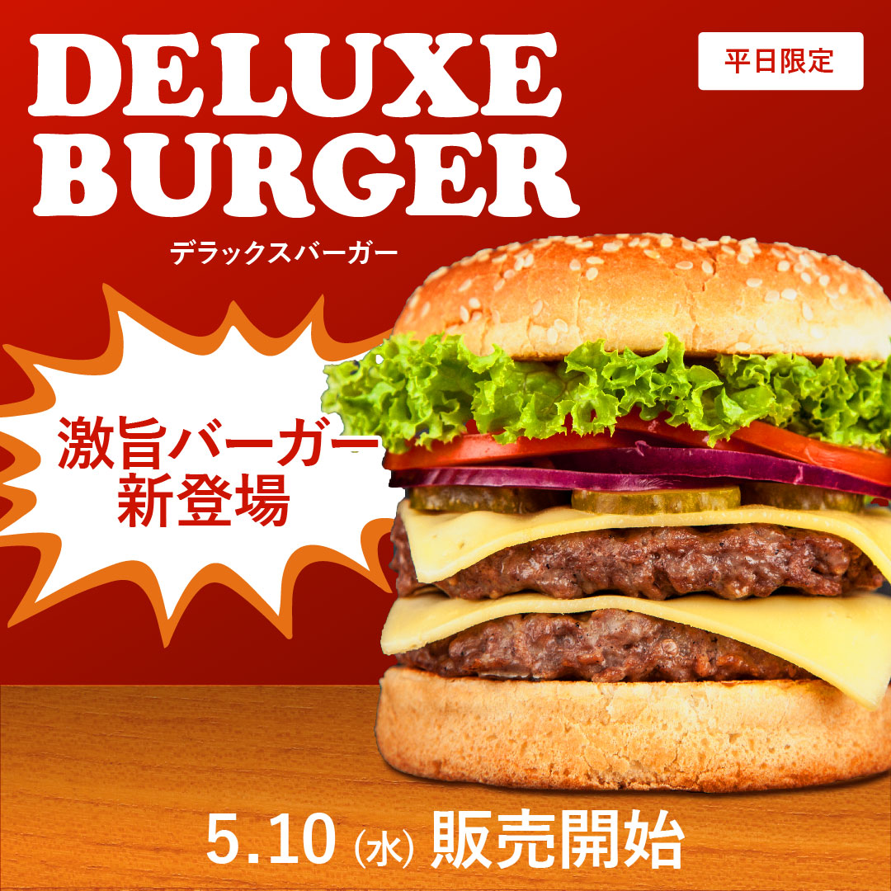
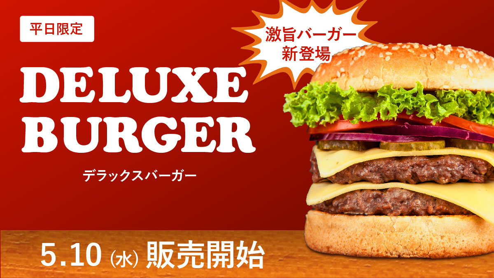

Works


ハンバーガーPOPverバナー
目的サイト:誘導と促進を図る。
ABテストをするので「高級ver」「POPver」の両方を作成。どちらが反応がいいかを検証。
ターゲット:10代～30代の男性。限定品が好きで空腹の方、男性、若者向け。
担当範囲:デザイン
使用ツール:Illustrator、Photoshop
サイズ:1080×1080、1200×675
制作のPOINT
赤色をベースにすることで目に留まりやすく印象に残るようにしました。
文字が目立つように工夫し、 POPなイメージにすることで、若い層から支持が出やすくしました。
影を濃く入れ、背景とテーブルにグラデーションを入れて立体感を出しました。